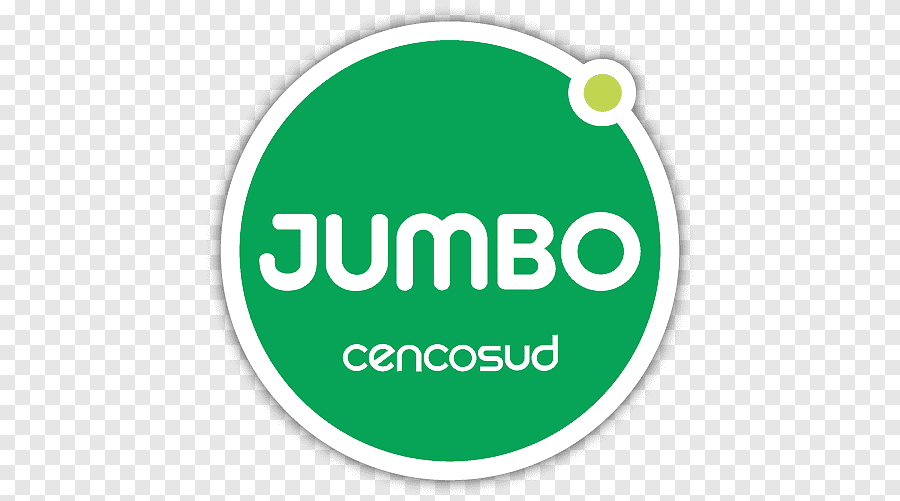

<div class="arrow-container">
    <button (click)="toggleFooter()" class="btn btn-link">
      <i [ngClass]="getToggleIconClass()" style="font-size: 2rem;"></i>
    </button>
  </div>
  
  <!-- Footer section -->
  <footer class="footer" *ngIf="footerVisible">
    <div class="footer-container">
      <h4>Supermercados disponibles</h4>
      <div class="footer-logos">
        
        
        
        <!-- Agrega más logos según sea necesario -->
      </div>
    </div>
  </footer>
  